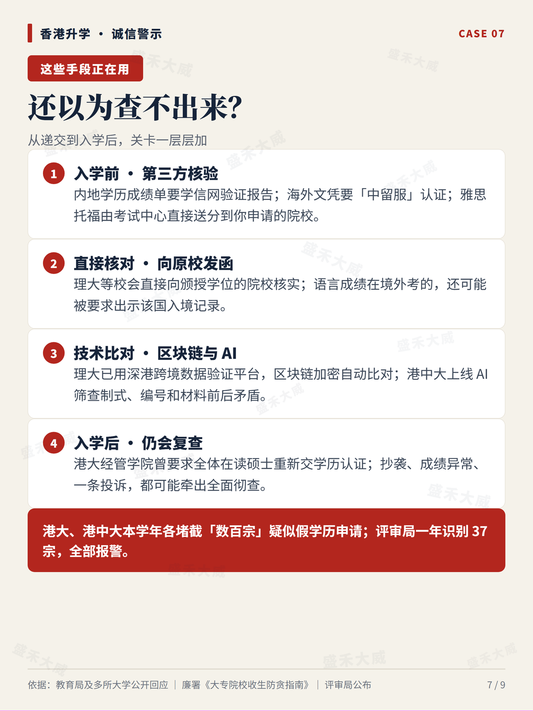

从递交到入学后，关卡一层层加。

入学前 · 第三方核验：内地学历成绩单要学信网验证报告；海外文凭要「中留服」认证；雅思托福由考试中心直接送分到你申请的院校。
直接核对 · 向原校发函：理大等校会直接向颁授学位的院校核实；语言成绩在境外考的，还可能被要求出示该国入境记录。
技术比对 · 区块链与 AI：理大已用深港跨境数据验证平台，区块链加密自动比对；港中大上线 AI 筛查制式、编号和材料前后矛盾。
入学后 · 仍会复查：港大经管学院曾要求全体在读硕士重新交学历认证；抄袭、成绩异常、一条投诉，都可能牵出全面彻查。
港大、港中大本学年各堵截「数百宗」疑似假学历申请；评审局一年识别 37 宗，全部报警。